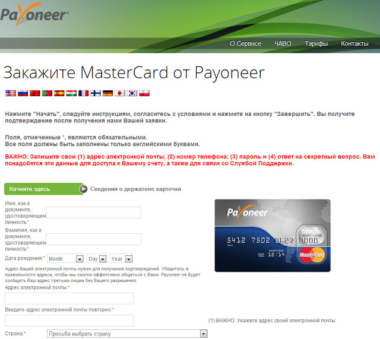
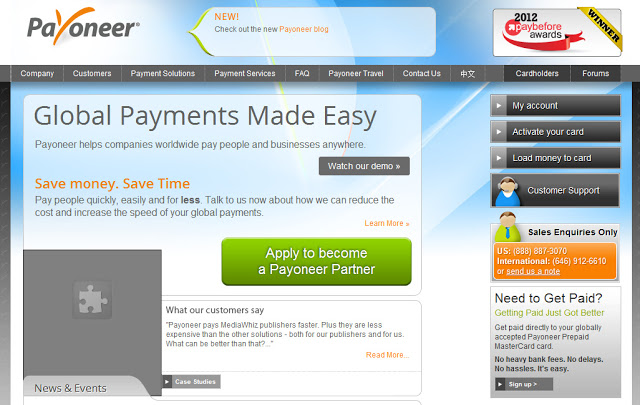
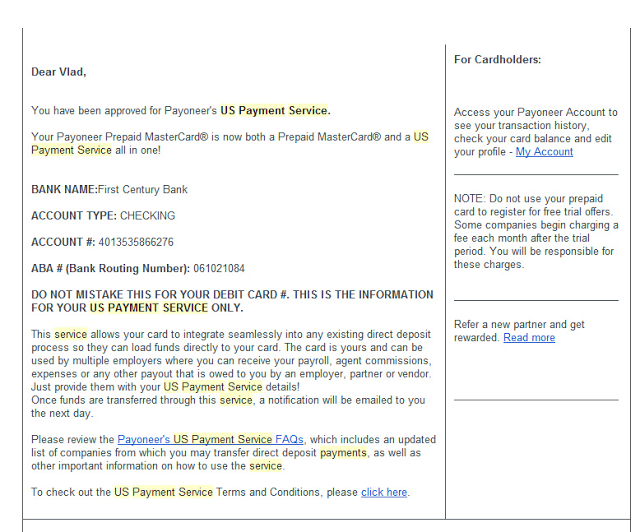
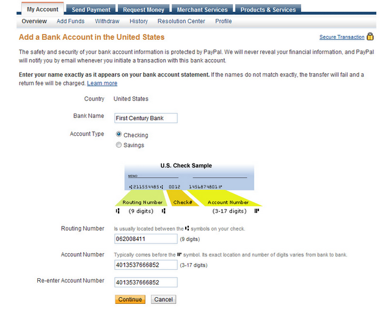
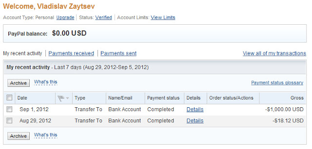
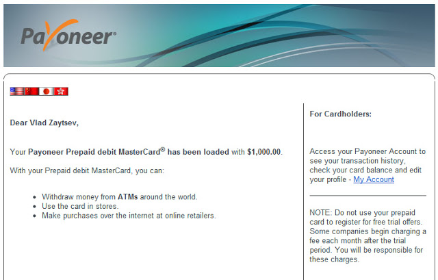
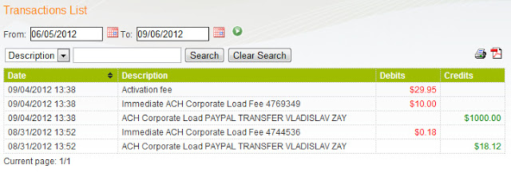

- Идем на Payoneer, и нажимаем большую кнопку Sing Up!. Там все просто, и я не буду расписывать по шагам.

Последуйте совету на страничке, и вводите полные имя и фамилию, чтоб не получить карту на Vlad Zaytsev, вместо Vladislav которую теперь не принимает пейпал и пара магазинов.
- Ждем карту. Мне пришла с украины за две недели. Приходит в обычном конверте. Отправка карты бесплатна. В бумажке раза 3 написано что карту надо активировать, не будем возражать. Идем на Payoneer, нажимаем Activate your Card:

Логинимся, вбиваем номер карты. Придумываем пин-код. Все, карта активна. Но толку от этого мало.
- Пишем на почту support.ru@payoneer.com письмо следующего содержания(можно на русском):
Прошу включить на аккаунте (ваша почта) карта (номер) US Payment Service
Вам ответят стандартным письмом о возможностях, и попросят прислать:
- Какие услуги или товары Вы предлагаете (пожалуйста, если имеются, предоставьте ссылки на соответствующие веб-сайты)?
Я писал продажа на Ebay.
- Пожалуйста, предоставьте нам ссылки на веб-сайты, показывающие образцы товаров, ресурсов в Интернете, либо услуг, предлагаемых Вами. Пожалуйста, убедитесь, что предоставляемые Вами ссылки упоминают Ваше имя или демонстрируют Ваше отношение к предлагаемым товарам/услугам.
Дал ссылку на пару лотов.
- Пожалуйста, пришлите нам скриншоты Вашего счёта на сайте компании от которой Вы намереваетесь получать платежи (например, PayPal, Amazon, Skrill и т.д.). На скриншоте должны присутствовать Ваше имя и баланс на счету.
Прислал скриншот пейпала с суммой.
- Пожалуйста, предоставьте копию удостоверения личности с фотографией. Это могут быть Ваши водительские права, общегражданский паспорт или загранпаспорт. Если документы не на английском языке, то мы предпочитаем копию загранпаспорта. Вы можете отсканировать / сфотографировать Ваше удостоверение личности и приложить полученный скан/снимок к Вашему ответу на данное сообщение. Пожалуйста, там где необходимо, присылайте копии обеих сторон документа. Мы предпочитаем файлы в формате JPEG размером до 1 MB.
Российский паспорт подошел, один разворот.
Ответы дублировал на английском.
- Через некоторое время(пара дней), если все сделали правильно, на почту свалится вот такое письмо:

Это означает, что у вас теперь есть счет в банке США, привязанный к вашей карте.
ACCOUNT #: 4013435566876 ABA # : 062120184
Вот два этих номера - и есть ваш аккаунт.
- Логинимся в аккаунт PayPal, нажимаем "Снять средства"(Withdraw), в дальнейшем я буду писать английскую версию.
Предлагают добавить Bank Account, соглашаемся. Заполняем по образцу:

Номера должны быть ваши, но если вы заполните мои, я не обижусь. Имя банка - First Century Bank, Account Type -
Checking(расчетный счет). Я выбрал savings, и все работает, но все же - в письме выше указан тип.
Некоторые компании, например Odesk спрашивает название города - "Commerce"
Если потеряли реквизиты из письма, их всегда можно найти Services - US Payment Service на сайте Payoneer.
- Все, в палке нажимаете Withdraw - Withdraw funds to your bank account, вводите сумму,Continue.
3-4 Business Days означает именно 3-4 дня, не больше и не меньше. За исключением нерабочих дней, но их в году всего 10. Мы на новый год больше отдыхаем.
С пейпала деньги уйдут:

- Ждем 3-4 дня, после этого деньги придут на Payoneer, а на почту свалится письмо:

- На счет, правда, попадет меньше: из $1018 на счету оказалось $978, $40 потерялись.
Из них $30 - годовое обслуживание карты, которое списывается при первом пополнении, а $10 - комиссия payoneer. Это всего 1%:

- После этого идем в любой банкомат, и снимаем деньги. Каждый запрос(на снятие, даже если денег нет, или проверка баланса) стоит $1, и $2.15 само снятие денег.
Т.е. если вы запросите неверную сумму, то с вас спишут $1, а если верную - то $3.15, учитывайте это, и снимайте чуть меньше.
Снимайте в тех банкоматах, где есть доллары, потом их можно поменять в банке с наиболее выгодным курсом, а не по курсу банкомата с рублями. А еще при снятии в валюте, отличной от официальной валюты страны банк имеет право взымать комиссию. Лучше проверить на маленькой сумме, или позвонить в банк, если это критично.
Кстати, покупки с карты бесплатны, но при оплате в рублях конвертация осуществляется банком - владельцем терминала.